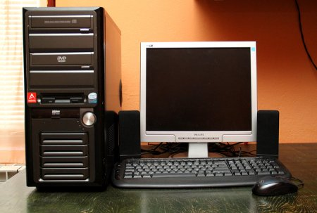

Računala se razlikuju po veličini i mogućnostima. Na jednoj su strani super računala, velika računala s tisućama povezanih mikroprocesora putem kojih se izvode izuzetno složeni proračuni. Na drugoj su strani sićušna računala ugrađena u vozila, TV prijamnike, stereo uređaje, kalkulatore i kućanske aparate. Predviđena su za izvršavanje ograničenog broja zadataka. Osobno računalo ili PC zamišljeno je tako da ga istodobno koristi samo jedna osoba.
Stolna računala(Desktop) oblikovana su za rad za pultom ili stolom. Obično su nešto veća i moćnija od ostalih vrsta osobnih računala. Sastavljena su od zasebnih komponenti. Glavna je komponenta, zvana sistemska jedinica, najčešće pravokutno kućište koje je smješteno na stolu ili ispod njega. Ostale komponente, kao što su monitor, miš i tipkovnica, povezane su sa sistemskom jedinicom.

Lorenca Buljan